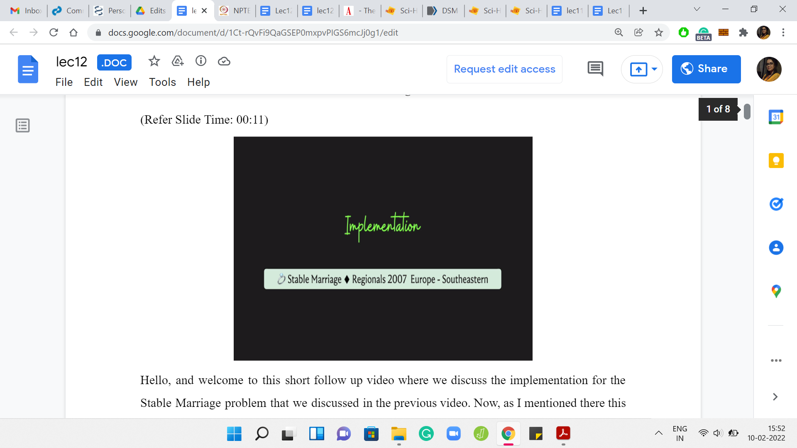

M 3 (Stable Marriage-II)
Lecture - 12
Greedy Algorithms - Module 3 (Stable Marriage-II)
(Refer Slide Time: 00:11)

Hello, and welcome to this short follow-up video where we discuss the implementation for the ‘Stable Marriage’ problem that we discussed in the previous video. As I mentioned there, this problem is available both in the ICBC Regional Archives as well as the CodeChef problem archive. The code that I am going to share with you right now is tested on the CodeChef platform.
If you want to run it on the ICPC platform instead, just make sure that you have appropriately adjusted for proper input-output. Make sure to double-check all the details at least once. With that said, let us get started. Our code for this problem is going to be in C++.
(Refer Slide Time: 00:49)

As usual, to begin with, we have the usual reading of input. We want to have 2N vectors to store the 2N rankings that have been given to us. The rankings are given as space-separated integers. The ‘men’ and the ‘women’ are represented as integers between 1 and N. The only little annoying detail to keep in mind is that the lines that give you the preferences begin with a number denoting whose preference it is.
The first line is the first women’s preference, and it starts with a ‘1’ and is then followed by N integers between 1 to N in some order, which gives you the actual ranking. You have to remember to ignore this leading number. If you forget to do that, your algorithm is going to be all messed up. It is a very tiny detail, but just useful to note. That is why you have the stand-alone ‘cin’ person outside of the ‘for’ loop, which takes this input and does not really do anything with it. Then you read the rest of it into a vector.
We have a collection of N vectors for the N women and a different collection of N vectors for the N men. You will notice that I am also reversing these rankings so that I have the top preferences at the end of the array. This just makes it easy for me to access the top choice that these people have because that is something that we will need to do frequently. But you can absolutely do this also without reversing the list. It would really be the same thing. It is a matter of minor details.
All the heavy lifting is done in this ‘solve’ function. Let us go and try to understand what is happening in solve. It is going to use a few helper functions whose objectives will be self-explanatory. I will show you the helper functions at the very end, but I will show you the main function, the main solve function, to begin with.
(Refer Slide Time: 02:44)

Here, we are going to maintain a list of engagements in the arrays or the vectors WE and ME. So, WE[i] is going to store the current partner of the (i+1)th woman, and ME[i] stores the current partner of the (i+1)th man. The reason this is off by 1 is because the men and the women in the problem statement are denoted as numbers between 1 and N whereas these arrays are indexed from 0 to N minus 1. That is why the offset. Just keep in mind that this is what is happening.
To begin with, if you remember also from the pseudocode, everybody is free. There are no engagements. Nobody is matched to anybody. We will use -1 to denote that somebody is currently single. The initialization is clearly that everybody is single. That is what is happening here.
(Refer Slide Time: 03:39)

Now, we turn to the main logic of actually creating the matching. The first thing we said was that as long as there is a single man left, who still has to propose to somebody, we are going to go ahead and actually execute that proposal. We have this helper function, which tells us if there are any single people remaining, and you could examine either of the arrays because WE and ME are symmetric in reflecting the matched state of all the people involved.
We could pass either of them to the ‘singlesRemaining’ helper function. This helper function will return true if there is at least 1 person who is still single at this point and will return false otherwise. Hopefully, this ‘while’ statement makes sense. If there is at least 1 person remaining, who is single, we enter the loop. Then we go over the list of all men. In particular, we focus on those men who are currently single. That is the ‘for’ loop under ‘if’ block here.
If we have a man who is single, so if ME[i] is -1, which is to say that the (i+1)th man is currently single, then we want this man to propose to the woman who is currently at the top of his list. That just essentially amounts to pulling back the last element of the array. Because remember, we said that we have reversed the preference list. The top element is really at the bottom of the array, or it is the last element of the array.
That is what I am pulling in here and we have a -1 to adjust for the indexing. This is the correct index to refer to in the arrays that we are storing. Of course, what is being stored, is the number or the identity of the woman that this person likes the most currently. We remove this element from M[i]’s vector as well because we will have no need for it later. Remember that you always go further down in your preference list, and you never look back.
This is just all about identifying the person that the (i+1)th man will propose to now. Once we are done with this, we actually try and look at what happens when the proposal is made. Here, we have to look at what is going on with the woman that we are now calling ‘top.’ For this woman, we have to distinguish between the cases of whether she is currently single or engaged. Let us do the easy case first.
If this woman is currently single, then we go ahead and make the match. There is nothing else that needs to be done. The match can be immediately made. On the other hand, if the woman is currently engaged, then we have to compare the person that she is engaged to with the person who is making the proposal. Let us store in the variable ‘competitor,’ the current match of this woman, and now what we have to do is compare the competitor with the man ‘i+1.’
We have another helper function ‘getRank,’ which tells us how the competitor is ranked, and how the current man is ranked. Remember all of these +1s and -1s are just adjusting for the indexing. If you read it carefully, you will see that all of it is consistent. We use the getRank function to retrieve the ranks of these two candidates in the preference list of the woman who is denoted by the variable top and we compare these two ranks.
Remember that smaller ranks are going to be better. That is how the helper function is set up. If the man ‘i+1’ has a lower rank, then that means that the current engagement needs to be broken, and the previous person that ‘top’ was engaged to, we need to signify that he is back in the single spool of men. We make sure to set the competitors index in the ME array to -1 and we also make sure that man ‘i+1’ is matched with top. That is going to happen with this match helper function. So, that is essentially the heart of the algorithm.
That is all the business that we need to do. We check if the woman who is at the top of the (i+1)th man’s preference list is single or not. If she is single, we make the match immediately. If she is not single, then we compare the new match with the old one. If the new match is better then we break off the old engagement and make the new match. Otherwise, we do nothing, and the man who was making the proposal continues to remain single. We just walk out of the ‘else’ block without any work being done in that case. That is the entire algorithm more or less. The only thing left is to show you how the helper functions work.
(Refer Slide Time: 08:26)

All of these helper functions are fairly standard. What getRank will do is, it will try to return the rank of the person in a given list. The reason we have N minus here is that we had reversed the list, to begin with. If you did not reverse the list, then you do not need to do this N minus calculation here. You can just directly return the location of the person in the list.
Now, the way the ‘find’ function works is that it actually gives you an index and memory. You need to adjust that to get the actual rank. You could also use something like distance to figure out the rank. You can have your own version of the getRank function, depending on which built-in functions you use, and whether you reversed the list in the beginning or not. Your version may vary a little bit from what we have here.
Just make sure that the way you index things — the way you number of things — is consistent between all the functions that you write. The singlesRemaining function is also really simple. It just boils down to identifying if the input array has a -1 or not. All we are doing here is just checking if there is an occurrence of -1 or not. If there is no occurrence of -1, we return false, otherwise, we return true.
The exact conditional and this ‘if’ statement here is basically based on the documentation for the find functions. If the ‘find’ function returns an index, which is just after the last location of the array, that is the signal, that the thing that you were looking for was not found. That is what we have here. I am sure there are many other ways of writing this as well. Take your pick. Essentially, the logic that you need to implement is to return false if -1 was not found in the array. Any way you have of doing that should be just fine.
The match function essentially updates the ‘engagements’ array to reflect that a particular man got matched with a particular woman. This is really simple. You need to go to the wth index in the women’s engagement array, and make sure that it is updated to ‘m.’ You need to go to the mth index in the men’s engagement array and make sure that it is updated to ‘w.’
Again, you could make a choice here about whether you want to reflect the true identity of the person, or do you want to use the index that you are going to be using, which is going to be essentially the identity -1. Whatever you do is fine, as long as you are consistent in your code and how you use it. I have tried to be careful here, and I think everything here is reasonably robust. As usual, you can find the entire code here in the GitHub repository.
If you have any feedback, then that would be absolutely very welcome. Also, if you manage to write this in a different language, please do submit a pull request so that we can add it to the official repository. With that, we come to the conclusion of the ‘Stable Marriage’ problem. I think I should quickly mention that the one thing I have not shown you on the slides is the output statement.
If you are just working from the video, and you try to imitate all of this code, please do not forget to write your final output statement where you output the stable matching that you found. I think we are done here. Let us call this a wrap. We have one more module left, which is going to be an interesting one because we will not really discuss any more problems.
We will, in fact, look at problems for which greedy strategies actually fail. Hopefully, that will serve as a useful warning for us to keep in mind when we are applying this very powerful but also very slippery sort of paradigm in contest programming. So, I will see you there. Thanks for watching and bye for now!